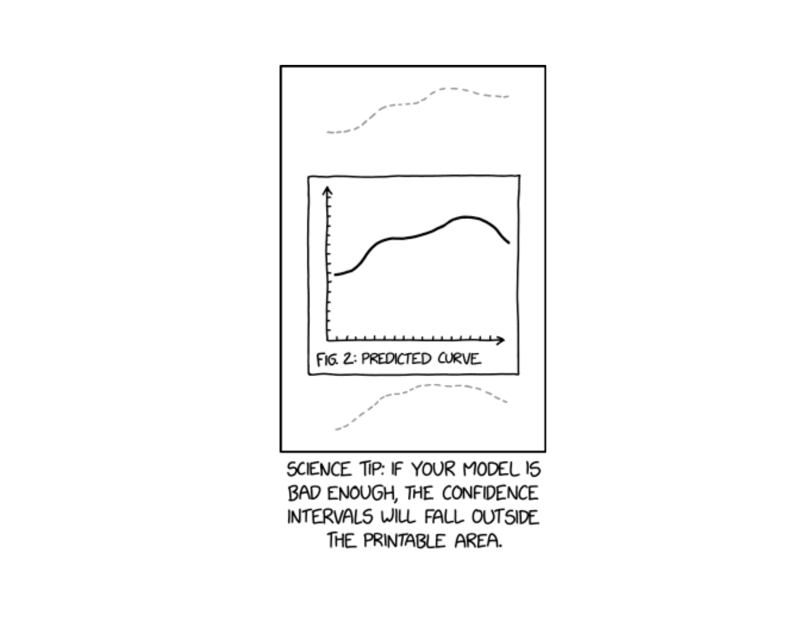
Lesson 19: Confidence Intervals I
Calendar
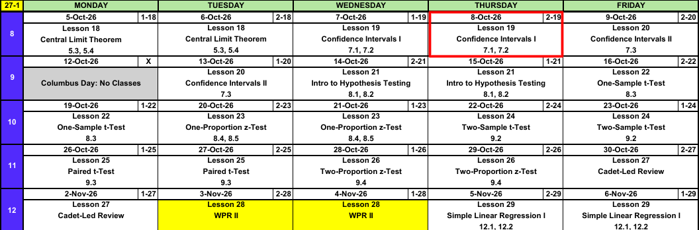
What We Did: Lesson 18
NoteReview: Central Limit Theorem (Lesson 18)
- \(\bar{X} \sim N\left(\mu,\ \left(\dfrac{\sigma}{\sqrt{n}}\right)^2\right)\), approximately, for \(n > 40\)
- Normal population: exact for any \(n\)
pnorm(x, mu, sigma/sqrt(n))- \(\hat{p} \sim N\left(p,\ \dfrac{p(1-p)}{n}\right)\), approximately, when \(np \ge 10\) and \(n(1-p) \ge 10\)
What We’re Doing: Lesson 19
Objectives
- Interpret a confidence level and the basic properties of a confidence interval. (SLO 5)
- Construct a large-sample confidence interval for a population mean. (SLO 5)
- Construct a large-sample confidence interval for a population proportion. (SLO 5)
Required Reading
Devore 7.1, 7.2
Break!
Cal

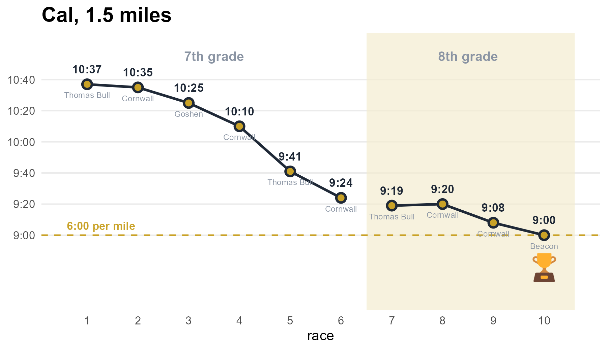
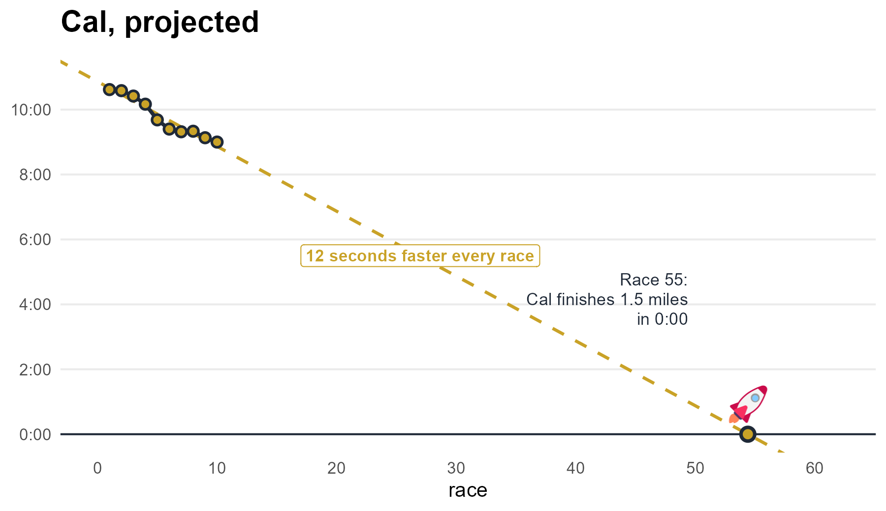
Reese
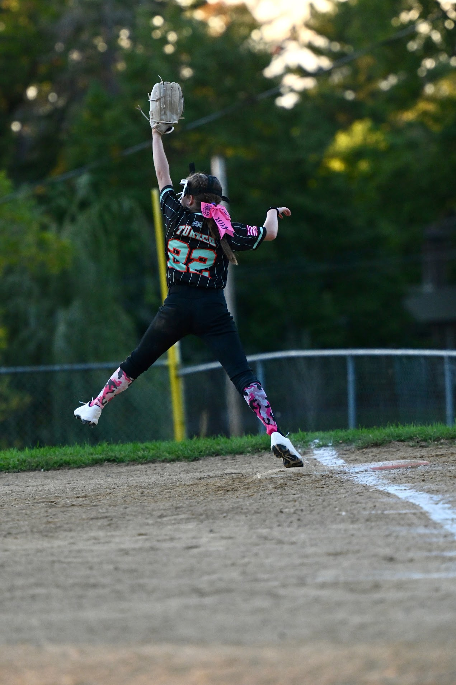
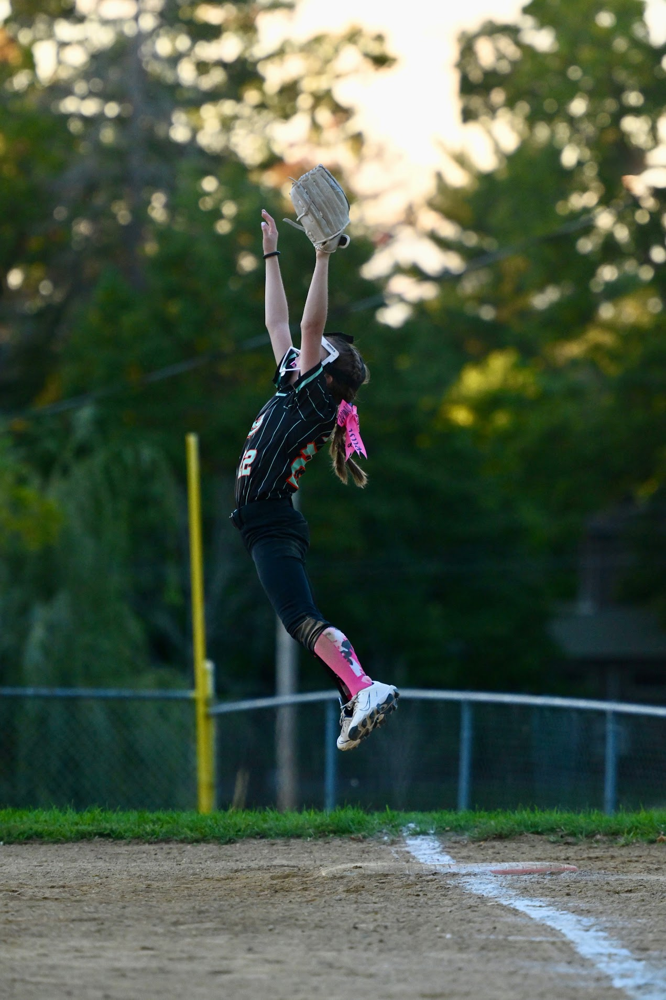
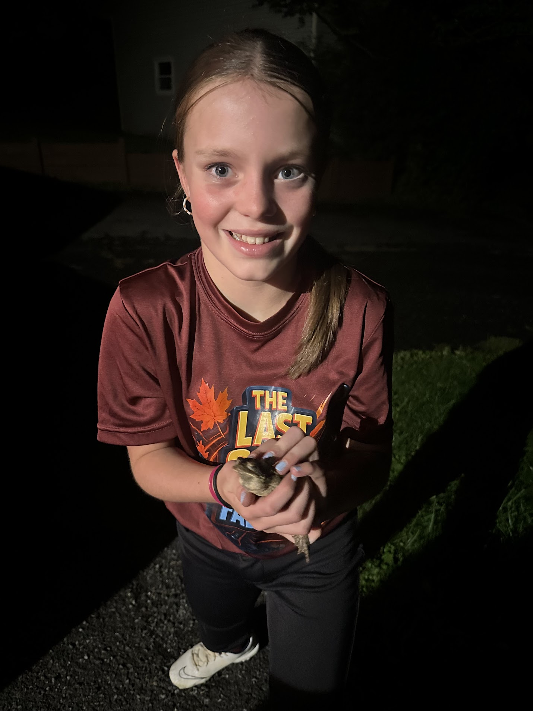
The Takeaway for Today
NoteKey Concepts from Lesson 19
- Every interval: \(\text{estimate} \pm \text{critical value} \times \text{standard error}\)
- Mean, \(n > 40\): \(\bar{x} \pm z_{\alpha/2}\,\dfrac{s}{\sqrt{n}}\)
- Proportion, \(n\hat{p} \ge 10\) and \(n(1-\hat{p}) \ge 10\): \(\hat{p} \pm z_{\alpha/2}\sqrt{\dfrac{\hat{p}(1-\hat{p})}{n}}\)
- Critical value:
qnorm(0.975)for 95%,qnorm(0.95)for 90%,qnorm(0.995)for 99% - 95% confident describes the method: about 95% of intervals built this way contain the parameter
Yesterday: The Central Limit Theorem
\[\bar{X} \sim N\left(\mu,\ \left(\frac{\sigma}{\sqrt{n}}\right)^2\right)\]
The mean of \(\bar{X}\) is the mean of the underlying distribution, and the standard deviation is the standard deviation of the underlying distribution divided by the square root of the sample size.
From the CLT to an Interval
What if we don’t know the true mean \(\mu\)? We’d love to put some sort of bounds around it, based off our sample, where we had reasonable assurance (a confidence level) that the true mean was within those bounds.
Step 1: Start with the CLT.
\[\bar{X} \sim N\left(\mu,\ \left(\frac{\sigma}{\sqrt{n}}\right)^2\right)\]
Step 2: Standardize.
\[Z = \frac{\bar{X} - \mu}{\sigma/\sqrt{n}} \sim N(0,\ 1)\]
Step 3: Take the middle \(1 - \alpha\). The critical value \(z_{\alpha/2}\) leaves \(\alpha/2\) in each tail.
\[P\left(-z_{\alpha/2} < Z < z_{\alpha/2}\right) = 1 - \alpha\]
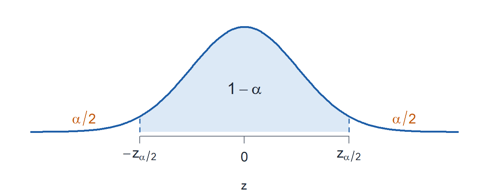
Step 4: Substitute for \(Z\).
\[P\left(-z_{\alpha/2} < \frac{\bar{X} - \mu}{\sigma/\sqrt{n}} < z_{\alpha/2}\right) = 1 - \alpha\]
Step 5: Multiply all three parts by \(\dfrac{\sigma}{\sqrt{n}}\).
\[P\left(-z_{\alpha/2}\,\frac{\sigma}{\sqrt{n}} < \bar{X} - \mu < z_{\alpha/2}\,\frac{\sigma}{\sqrt{n}}\right) = 1 - \alpha\]
Step 6: Subtract \(\bar{X}\) from all three parts.
\[P\left(-\bar{X} - z_{\alpha/2}\,\frac{\sigma}{\sqrt{n}} < -\mu < -\bar{X} + z_{\alpha/2}\,\frac{\sigma}{\sqrt{n}}\right) = 1 - \alpha\]
Step 7: Multiply by \(-1\). The inequalities flip.
\[P\left(\bar{X} + z_{\alpha/2}\,\frac{\sigma}{\sqrt{n}} > \mu > \bar{X} - z_{\alpha/2}\,\frac{\sigma}{\sqrt{n}}\right) = 1 - \alpha\]
Step 8: Rewrite in order.
\[P\left(\bar{X} - z_{\alpha/2}\,\frac{\sigma}{\sqrt{n}} < \mu < \bar{X} + z_{\alpha/2}\,\frac{\sigma}{\sqrt{n}}\right) = 1 - \alpha\]
So we are \(100(1 - \alpha)\%\) confident that the true mean \(\mu\) is somewhere within these bounds.
\[\boxed{\bar{X} \pm z_{\alpha/2}\,\frac{\sigma}{\sqrt{n}}}\]
Applying It
50 cadets, 2 mile run times: \(\bar{x} = 14.81\) minutes, \(s = 1.86\) minutes.
Build a 95% confidence interval for \(\mu\).
\(1 - \alpha = 0.95\), so \(\alpha = 0.05\) and \(\alpha/2 = 0.025\). The critical value is \(z_{0.025}\).
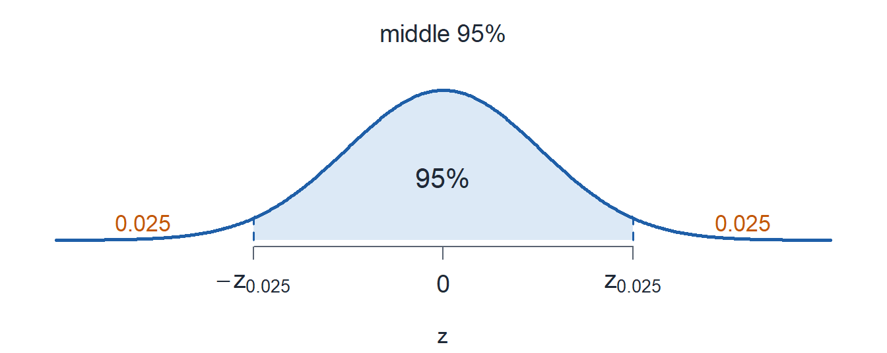
qnorm(0.975) = 1.96
\[14.81 \pm 1.96\,\frac{1.86}{\sqrt{50}} = 14.81 \pm 0.516 = (14.29,\ 15.33)\]
Interpretation: We are 95% confident the true mean 2 mile run time of all cadets is between 14.29 and 15.33 minutes.
Confidence Interval for a Mean
ImportantLarge-Sample Confidence Interval for \(\mu\)
\[\bar{x} \pm z_{\alpha/2}\,\frac{s}{\sqrt{n}}\]
- Condition: \(n > 40\)
- Estimate: \(\bar{x}\)
- Critical value: \(z_{\alpha/2}\)
- Standard error: \(\dfrac{s}{\sqrt{n}}\)
The Critical Value
A \(100(1-\alpha)\%\) interval leaves \(\alpha/2\) in each tail.
| confidence level | \(\alpha\) | \(\alpha/2\) | R-Lite | \(z_{\alpha/2}\) |
|---|---|---|---|---|
| 90% | 0.10 | 0.05 | qnorm(0.95) |
1.645 |
| 95% | 0.05 | 0.025 | qnorm(0.975) |
1.960 |
| 99% | 0.01 | 0.005 | qnorm(0.995) |
2.576 |
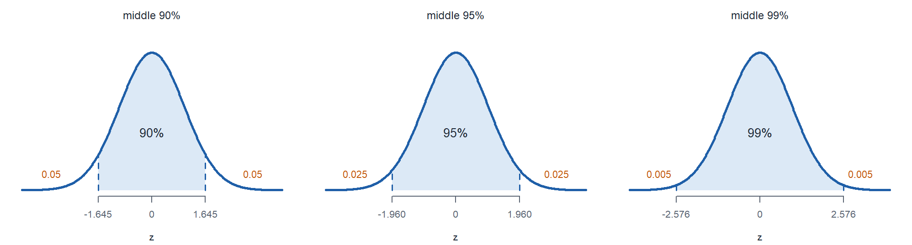
Run Times
\(n = 50\), \(\bar{x} = 14.81\), \(s = 1.86\).
\[\bar{x} \pm z_{\alpha/2}\,\frac{s}{\sqrt{n}}\]
a) Build a 90% confidence interval for \(\mu\).
TipAnswer
\[14.81 \pm 1.645\,\frac{1.86}{\sqrt{50}} = 14.81 \pm 0.433 = (\mathbf{14.38},\ \mathbf{15.24})\]
14.81 + c(-1, 1) * qnorm(0.95) * 1.86 / sqrt(50)
b) Build a 99% confidence interval for \(\mu\).
TipAnswer
\[14.81 \pm 2.576\,\frac{1.86}{\sqrt{50}} = 14.81 \pm 0.678 = (\mathbf{14.13},\ \mathbf{15.49})\]
14.81 + c(-1, 1) * qnorm(0.995) * 1.86 / sqrt(50)
c) Which interval is widest?
TipAnswer
The 99% interval.
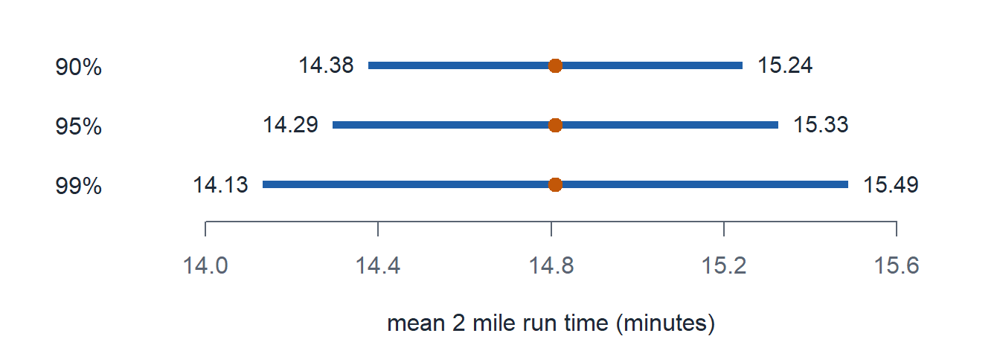
What Does 95% Confident Mean?
ImportantTwo ways to correctly interpret it
We are 95% confident the true mean 2 mile run time of all cadets is between 14.29 and 15.33 minutes.
If we took a new sample and built the interval again, over and over, about 95% of those intervals would contain the true mean 2 mile run time.
WarningWhat the confidence level does not say
- Wrong: 95% of cadets run between 14.29 and 15.33 minutes.
- Wrong: there is a 95% chance \(\mu\) is in this interval. \(\mu\) is fixed. The interval is what is random.
What Changes the Width
\[\text{width} = 2\,z_{\alpha/2}\,\frac{s}{\sqrt{n}}\]
- Higher confidence level: wider
- Larger \(n\): narrower
- Larger \(s\): wider
Confidence Interval for a Proportion
ImportantLarge-Sample Confidence Interval for \(p\)
\[\hat{p} \pm z_{\alpha/2}\sqrt{\frac{\hat{p}(1-\hat{p})}{n}}\]
- Condition: \(n\hat{p} \ge 10\) and \(n(1-\hat{p}) \ge 10\)
- Estimate: \(\hat{p} = \dfrac{x}{n}\)
- Critical value: \(z_{\alpha/2}\)
- Standard error: \(\sqrt{\dfrac{\hat{p}(1-\hat{p})}{n}}\)
Coffee
In a random sample of \(150\) cadets, \(66\) drink coffee before first hour.
a) Find \(\hat{p}\) and check the condition.
TipAnswer
\[\hat{p} = \frac{66}{150} = \mathbf{0.44}\]
\(n\hat{p} = 66 \ge 10\) and \(n(1-\hat{p}) = 84 \ge 10\).
b) Build a 95% confidence interval for \(p\).
TipAnswer
\[0.44 \pm 1.96\sqrt{\frac{0.44(0.56)}{150}} = 0.44 \pm 0.0794 = (\mathbf{0.3606},\ \mathbf{0.5194})\]
0.44 + c(-1, 1) * qnorm(0.975) * sqrt(0.44 * 0.56 / 150)
c) Interpret the interval.
TipAnswer
We are 95% confident the true proportion of all cadets who drink coffee before first hour is between 0.3606 and 0.5194.
Board Problems
Problem 1: Cadet Sleep
A random sample of \(64\) cadets averages \(\bar{x} = 5.8\) hours of sleep on a weeknight with \(s = 1.2\) hours.
NoteQuestions
Check the condition.
Build a 95% confidence interval for \(\mu\).
Interpret the interval.
Build a 99% confidence interval for \(\mu\).
Is 7 hours a plausible value for \(\mu\)?
TipAnswers
\(n = 64 > 40\).
\[5.8 \pm 1.96\,\frac{1.2}{\sqrt{64}} = 5.8 \pm 0.294 = (\mathbf{5.506},\ \mathbf{6.094})\]
5.8 + c(-1, 1) * qnorm(0.975) * 1.2 / sqrt(64)
We are 95% confident the true mean weeknight sleep of all cadets is between 5.506 and 6.094 hours.
\[5.8 \pm 2.576\,\frac{1.2}{\sqrt{64}} = 5.8 \pm 0.386 = (\mathbf{5.414},\ \mathbf{6.186})\]
5.8 + c(-1, 1) * qnorm(0.995) * 1.2 / sqrt(64)
- No. 7 is above both intervals.
Problem 2: PMCS Faults
An inspector takes a random sample of \(225\) vehicles in a brigade. \(54\) have a fault on their PMCS.
NoteQuestions
Find \(\hat{p}\) and check the condition.
Build a 95% confidence interval for \(p\).
Interpret the interval.
Build a 90% confidence interval for \(p\).
TipAnswers
\(\hat{p} = 54/225 = \mathbf{0.24}\). \(n\hat{p} = 54 \ge 10\) and \(n(1-\hat{p}) = 171 \ge 10\).
\[0.24 \pm 1.96\sqrt{\frac{0.24(0.76)}{225}} = 0.24 \pm 0.0558 = (\mathbf{0.1842},\ \mathbf{0.2958})\]
0.24 + c(-1, 1) * qnorm(0.975) * sqrt(0.24 * 0.76 / 225)
We are 95% confident the true proportion of all vehicles in the brigade with a fault is between 0.1842 and 0.2958.
\[0.24 \pm 1.645\sqrt{\frac{0.24(0.76)}{225}} = 0.24 \pm 0.0468 = (\mathbf{0.1932},\ \mathbf{0.2868})\]
0.24 + c(-1, 1) * qnorm(0.95) * sqrt(0.24 * 0.76 / 225)
Problem 3: Barbershop
A random sample of \(81\) cadets records their wait at the barbershop: \(\bar{x} = 22.5\) minutes, \(s = 6.3\) minutes. The 95% confidence interval for \(\mu\) is \((21.128,\ 23.872)\).
NoteQuestions
Verify the interval.
True or false: 95% of cadets wait between 21.128 and 23.872 minutes.
True or false: there is a 95% chance \(\mu\) is between 21.128 and 23.872.
True or false: if we repeated the sampling many times, about 95% of the intervals would contain \(\mu\).
With the same \(\bar{x}\) and \(s\) from \(324\) cadets, what happens to the width?
TipAnswers
- \(n = 81 > 40\).
\[22.5 \pm 1.96\,\frac{6.3}{\sqrt{81}} = 22.5 \pm 1.372 = (\mathbf{21.128},\ \mathbf{23.872})\]
False. The interval is about \(\mu\), not about individual waits.
False. \(\mu\) is fixed. It is in this interval or it is not.
True.
Half as wide. \(\sqrt{324} = 18 = 2\sqrt{81}\), so the standard error drops from \(0.7\) to \(0.35\).
Problem 4: Arvin Gym
In a random sample of \(400\) cadets, \(120\) went to Arvin at least four times last week.
NoteQuestions
Build a 99% confidence interval for \(p\).
Interpret the interval.
A cadet claims a third of the Corps goes at least four times a week. Is that plausible?
A second sample of \(40\) cadets has \(8\) who did. Can you build the interval?
TipAnswers
- \(\hat{p} = 120/400 = 0.30\). \(n\hat{p} = 120 \ge 10\) and \(n(1-\hat{p}) = 280 \ge 10\).
\[0.30 \pm 2.576\sqrt{\frac{0.30(0.70)}{400}} = 0.30 \pm 0.0590 = (\mathbf{0.2410},\ \mathbf{0.3590})\]
0.30 + c(-1, 1) * qnorm(0.995) * sqrt(0.30 * 0.70 / 400)
We are 99% confident the true proportion of all cadets who went to Arvin at least four times last week is between 0.2410 and 0.3590.
Yes. \(0.333\) is inside the interval.
No. \(n\hat{p} = 8 < 10\).
Before You Leave
Today
- \(\text{estimate} \pm \text{critical value} \times \text{standard error}\)
- Mean, \(n > 40\): \(\bar{x} \pm z_{\alpha/2}\,s/\sqrt{n}\)
- Proportion, \(n\hat{p} \ge 10\) and \(n(1-\hat{p}) \ge 10\): \(\hat{p} \pm z_{\alpha/2}\sqrt{\hat{p}(1-\hat{p})/n}\)
- 95% confident is about the method
Any questions?
Next Lesson
Lesson 20: Confidence Intervals II
- Construct a confidence interval for a mean based on a normal population using the \(t\) distribution
- Determine the sample size needed to achieve a specified interval width
- Interpret a confidence interval correctly
Reading: Devore 7.3
Upcoming Graded Events
- WebAssign 7.1, 7.2: due at the start of Lesson 20
- EDA: due 11 October
- WPR II: Lesson 28 (covers Lessons 18-26)
- TEE: 15-18 Dec 2026